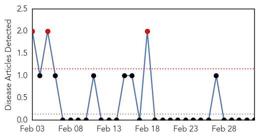
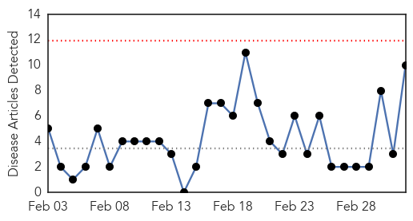
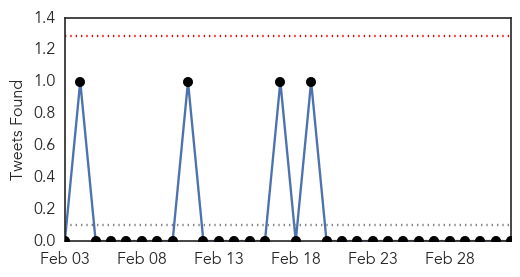
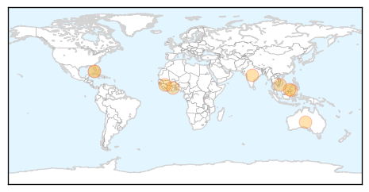
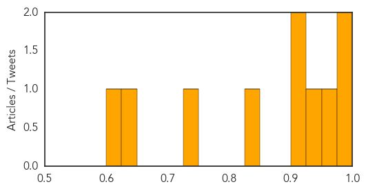

Yellow Fever
30-Day Web Trend
3 alerts, 0 warnings

30-Day Twitter Trend
0 alerts, 0 warnings

Article Locations

Article Confidences

Top Articles:
-
No articles found for Mar 04, 2015
Top Tweets:
-
No tweets found for Mar 04, 2015
Dengue Fever
30-Day Web Trend
0 alerts, 0 warnings

30-Day Twitter Trend
0 alerts, 0 warnings

Article Locations
Article Confidences
Top Articles:
- 0.997
- Dengue fever spreads to 38 localities in Vietnam, killing 3
- 0.979
- Africa: How neglected tropical diseases reduce the quality of life
- 0.974
- HC seeks steps taken to curb swine flu
- 0.946
- The hidden burden of dengue fever in West Africa
- 0.907
- Massive 553% jump in KK dengue cases – BorneoPost Online
- 0.903
- Study: Diseases Mistaken for Malaria
- 0.846
- Fighting dengue in the Florida Keys
- 0.750
- Carry out fogging before dengue outbreak – BorneoPost Online
- 0.629
- Insect Control Company Proposes Using Genetically Modified Mosquitoes in Florida
- 0.616
- Malaysia General Business Sports and Lifestyle News
Top Tweets:
-
No tweets found for Mar 04, 2015